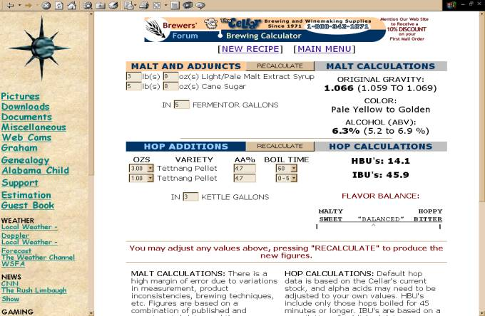

Clyde’s
Cat Tails
NEAR
BEER
Boil 1 gallon to a boil and add
·
3.5 oz Tettnang Pellet (4.7% AA)
Boil for 60 mintues.
Seperatly, Bring 2.5 gallons to a boil and
then add
·
3 lbs of ultralight liquid malt extract
·
5 lbs of granulated cane sugar
·
The 1 gallon of Tettnang Pellet Wort originally
boiled for 60 minutes
Boil for 10 minutes and then add
·
1 tsp of Irish Moss
Boil for an additional 5 minutes and then add:
·
1 oz of Tettnang pellet
Finish boil and pitch yeast. Rack to a secondary after 7 days. Bottle after 14 and let age for 1 month.
